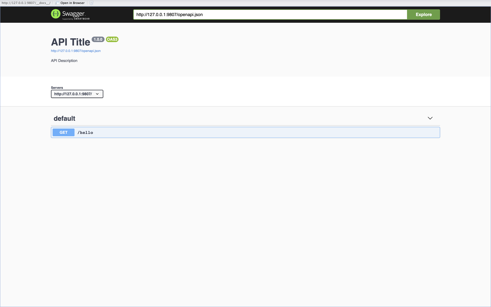
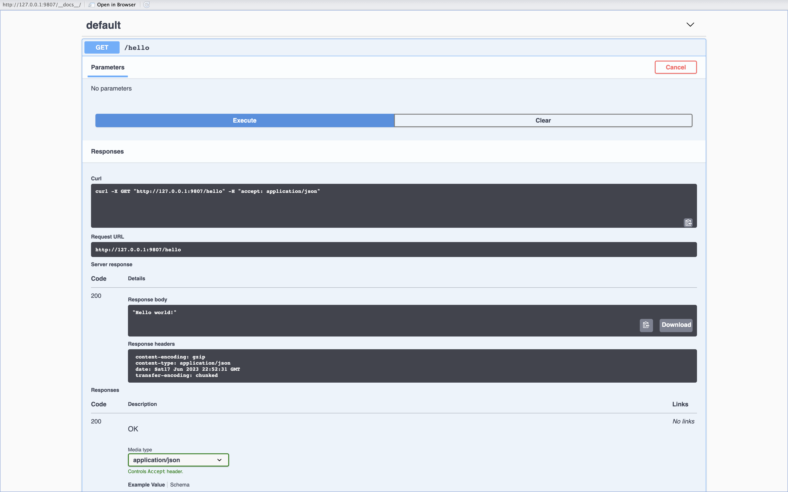

How Can Someone Else Use My Model?
APIs, REST, and Production Services
Introduction
At this point in this series, I’ve discussed a lot of aspects of putting machine learning into production. I’ve gone over workflow orchestration for retraining and monitoring models, unit testing for ensuring that your code is correct, experiment tracking and model versioning for keeping track of what’s actually running in production at any given time, and dependency management and Docker for packaging up your analytical code.
The last of the nuts and bolts that I’ve yet to go through is how other people - teammates, clients, users, etc. - will actually use your model.
Types of Inference
In very broad strokes, there are two types of “inference” (read: ways of making predictions) that you’ll encounter: Online and batch. In short, “online” means that your model is making predictions in real-time and serving those predictions to whoever the user of your model is. For instance, if you have a widget on your website that lets a student increase or decrease their GPA and see how their chances of admission to Carleton College change, then the process of them sliding the slider, the new GPA being sent to your model, and your model returning a new prediction of that student’s chances is an example of online inference.
Batch inference is what you might think of as “offline” inference: You make predictions for many people, items, etc. at one time and store them somewhere to be accessed by users. For instance, if you had individual pages with information on any given school and wanted to show a few recommended schools in a section entitled “Students who like X school also like” you might be okay with only recomputing those most similar schools once per day, or once per week, or so on. So in that case, you’d have some job - orchestrated by your workflow orchestration tool of choice - that would create the lists of similar schools for each school, and then would store those lists somewhere for them to be ingested and eventually used on your school pages. Then, once the lists are ingested, the recommendations are static until the job next runs to update them again.
This post will cover online inference, and a common way that a consumer of your model’s predictions might communicate with that model: A REST API.
APIs and REST
An Application Programming Interface (API) is a fancy acronym for something that I might best describe as an agreement between you and somebody else about what they provide and how you will use it. For instance, you might have used a public API like that of the Census for programmatically pulling population statistics, income statistics, and so on, or Twitter for doing the same for tweets.
The basic principle is that an API lets you interact with something, such as data (in the case of Twitter and the Census) or a machine learning model, as long as you comply with the API’s “contract.” If a model lives behind an API, you can make a “request” to that API, and assuming that you’ve correctly provided all the necessary fields, added the correct request headers, etc., the API will hold up its end of the bargain and return the prediction you asked for.
Very often, you’ll hear talk of REST or “RESTful” APIs. At their core, a REST API is just an API that follows REST standards, including having a uniform interface, being stateless, and so on. I’m no expert on REST, so I’ll defer to a great explainer by the AWS team for more details.
Plumber
In R, the Plumber package provides a friendly set of tools for building and deploying APIs of your own. All you need in the most simple case is an R script like this:
library(plumber)
pr() %>%
pr_get(
"/hello",
function() "Hello world!",
serializer = serializer_unboxed_json()
) %>%
pr_run(port = 9807)Running that R code will open up a Swagger UI that shows the endpoint you defined at /hello that will look like this:

You can use the Swagger UI to make a request to your API and see the result, which is the Hello world! that we expected:

You can also use curl (or httr or similar) to make requests to your API from the command line, from R, or from any other language of your choosing as follows:
curl http://127.0.0.1:8080/helloThis request will return:
"Hello world!"A More Involved Example
Now that we can successfully talk to our API, let’s imagine we wanted to make predictions from a model that predicts someone’s weight given their height. For the purposes of this example, our “model” is just going to take the height and multiply it by pi, which will return a terrible prediction, but a prediction nonetheless. This is actually an important note about APIs: This trivial example - multiplying by pi - is actually the whole point of having an API. From the consumer of an API’s point of view, whatever is happening behind the scenes is just that: Behind the scenes. The client needs no knowledge of how your API is actually going about figuring out what it should be returning to you. All the client knows is that there’s a contract: If they give you something, you process that thing and give them back what they asked for.
With this in mind, let’s add a /predict endpoint to our service above to predict someone’s weight based on their height.
library(plumber)
pr() %>%
pr_get(
"/hello",
function() "Hello world!",
serializer = serializer_unboxed_json()
) %>%
pr_get(
"/predict",
function(height) as.numeric(height) * pi,
serializer = serializer_unboxed_json()
) %>%
pr_run(port = 9807)Now we can call our /predict endpoint with a query parameter height indicating the height of the person. Let’s call our prediction endpoint with a height of 5:
curl "http://127.0.0.1:9807/predict?height=5"
15.708Great! It gives back 15.708, which is indeed equal to 5 * pi.
Again, the actual computation here isn’t really the point. Multiplying the height by pi is indeed a terrible way to predict someone’s weight, but the key takeaway is that from the client’s point of view, the computation is a black box. As long as you don’t make any changes to how the client is supposed to interact with your API - these types of changes are called “breaking” changes, and you should be very, very careful making them - you can arbitrarily change the guts of your API and have the client be none the wiser. This means that you could multiply the height by e instead of by pi, or you could swap in a machine learning model and call its predict method from inside of the endpoint. For instance, you could do something like this:
library(plumber)
## NOTE:
## This assumes you have a model whose
## predict method takes a single-column
## dataframe (with `height` as the column).
## living at `path/to/model.rds`
model <- readRDS("path/to/model.rds")
pr() %>%
pr_get(
"/hello",
function() "Hello world!",
serializer = serializer_unboxed_json()
) %>%
pr_get(
"/predict",
function(height) predict(model, newdata = data.frame(height = as.numeric(height))),
serializer = serializer_unboxed_json()
) %>%
pr_run(port = 9807)In this example, we first load our model into memory at API boot time, and then it’s accessible to our /predict endpoint whenever it’s called by clients. You can extend this basic setup to be arbitrarily complex: Many models, many endpoints, helper code, tests, etc. but the basic premise is always the same: Declare a way for an outside client to use your model by providing an API contract, and then respond to requests for predictions from your model based on whatever inputs you need by taking those inputs, doing any data munging or feature engineering you need to do, running the prediction, doing post-processing or anything else, and returning the response to the client.
Deployment
“But wait!” you think. “pr_run on my local machine is only accessible via localhost. What about if someone outside of my machine wants to access my model?”
Great question! You need to deploy your API somewhere outside of your local machine and accessible over the internet so that clients can use your model. There are a number of ways to achieve this, and discussing individual hosting platforms and how to get your code running on them is a bit of a rabbit hole beyond the scope of this post. There are a number of ways of deploying your code into production systems. One thing you can do is wrap up your API in Docker, and then ship it basically anywhere that runs Docker containers (read: basically anywhere). But how you go about shipping your code to production is ultimately a decision that needs to be made based on your team and the problem you’re solving, among other factors. There’s certainly no single right way to go about it.
If you do ultimately decide to use Docker, you’ll have a solution that works roughly the same whether you’re working in Plumber, Flask, FastAPI, or another framework. You’d build your API, package it up in a Docker image, and ship that image to some place out in the world that can run said image for you. Then, once it’s there, you can call it just as you would any public-facing API!
Wrapping Up
This post was the last nuts and bolts, mechanical post in this series about doing data science. And it felt like a good place to wrap up: Going over how models actually get used by consumers in the real world at a very high level.
The deployment, monitoring, and performance of APIs in production systems has been written about and done over and over again by lots of people far more qualified than I am to educate others on it. Notably, virtually every software developer working on the back end of any website or similar service has worked in production systems that are far more complicated than anything I’ve worked in, so I’ll defer lots of the technical details and best practices to them in favor of giving a hopefully helpful, minimal example here about how to achieve a similar goal, but for serving predictions from machine learning models.
At this point, I’ve discussed most of the end-to-end process that we follow for shipping ML products: Starting with the basics of how we structure, test, and review code, to how we run that code in Airflow to train and monitor models, to how we use Docker to deploy APIs in production. There’s lots I’ve missed and didn’t cover, but my hope was that by this point, I’d have achieved one of my main goals in writing this series: To give aspiring data scientists a brief, gentle introduction to some of the tools and processes that we lean on to operationalize our data science work.